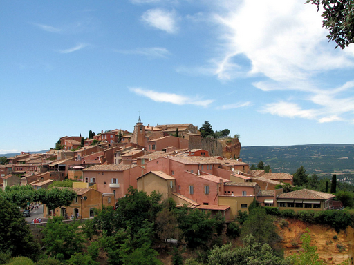
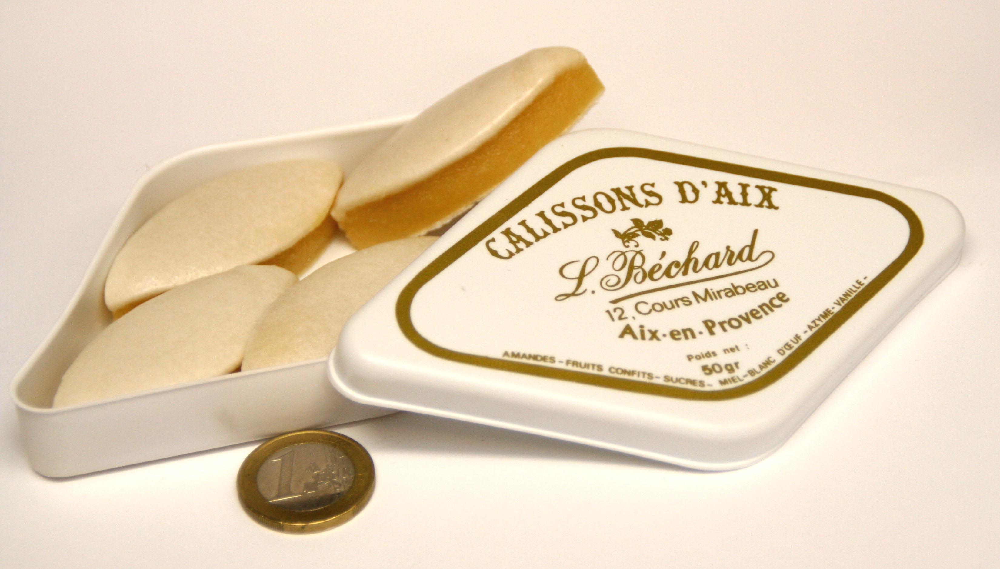

🌾 La Nature
Dès mon arrivée, j’ai été émerveillé par les paysages envoûtants de la Provence : champs de lavande parfumés, collines ondulantes et ciels d’un bleu infini.
J’ai parcouru le Plateau de Valensole où l’air était chargé de ce parfum unique. La randonnée dans le Luberon m’a offert un havre de paix et de beauté naturelle.
🏛️ La Culture
Les villages de Gordes et Roussillon dévoilent leur charme intemporel avec leurs maisons en pierre dorée et leurs ruelles pittoresques.
Sur les marchés locaux, l’artisanat, les herbes et les savons traditionnels capturent l’essence de cette région chaleureuse.
🧀 La Gastronomie
Chaque repas était un festin pour les sens. J’ai savouré la ratatouille traditionnelle, les olives du terroir, et le fromage de chèvre fondant.
En dessert, les calissons d’Aix-en-Provence, doux et délicats, sont devenus mes préférés. Une gourmandise à ne pas manquer !
🎯 Conclusion
Cette semaine en Provence restera gravée dans mon cœur pour toujours. La richesse de la nature, la chaleur des gens et les délices culinaires m’ont fait rêver d’y retourner.
Merci de m’avoir accompagné dans ce voyage. À très bientôt pour de nouvelles aventures.